The basic xtriage tutorial video is available on the Phenix YouTube channel and explains how to run phenix.xtriage via the GUI.
The advanced tutorials cover (click on the link to access the video on the tutorial channel):
The minimum input for xtriage is a reflection file and symmetry information, which for MTZ files is automatically extracted. A sequence file is helpful for calculting expected solvent content. A model file (PDB or mmCIF), if available, will be used in the calculation of twinning statistics.
To launch Xtriage, open the main Phenix GUI and click on or drag-and-drop a reflection file onto the Xtriage module. The command-line equivalent is phenix.xtriage_gui; most parameters recognized by the command-line program should work here as well. The configuration window is minimal:
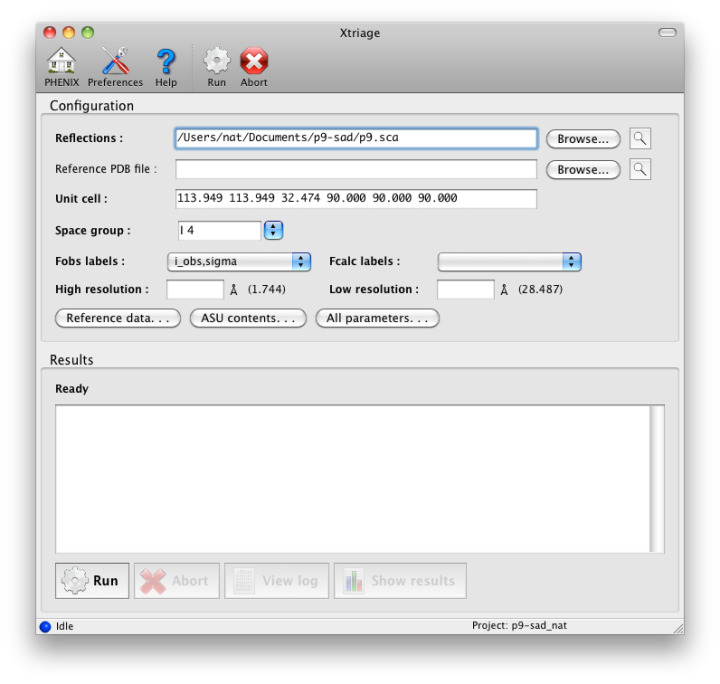
The Parameters button opens a window containing the most essential information about the reflection data, including choice of data to analyze if more than one suitable Miller array is present. Xtriage will accept any reflection file format and both intensities and amplitudes, but a Scalepack or MTZ file with separate I+/I- is the most typical input. (We recommend using unmerged data as it will be used in additional analyses of data quality and anomalous signal, but this is optional.) Most of this information will be extracted automatically if possible; at a minimum, only the input data and crystal symmetry are required. A complete listing of parameters can be found in the manual for the command-line version. Xtriage is also run automatically by the wizards (AutoSol, AutoBuild) and the graphical results can be viewed from the GUIs for those programs as well.
The output of the GUI is nearly identical in content to the output of the command-line version. The analyses performed are divided into several categories, covered in more detail below:
- Merging statistics: these evaluate the agreement and quality of redundant experimental observations. Only included if unmerged data were used as input.
- Solvent content and Matthews coefficient: attempts to guess the crystal contents based on unit cell and space group (and optionally, information about the crystallized molecules).
- Data strength and completeness: analysis of signal-to-noise ratio both as an overall average and as a fraction of all possible reflections, and checking for pathologically incomplete data.
- Absolute scaling and Wilson analysis: calculates overall isotropic and anisotropic B-factors for the data, and compares the Wilson plot to an empirical function derived from PDB structures. This also includes the detection of ice rings and other pathologies.
- Anomalous signal: indicates approximate quality of anomalous signal, if anomalous data were provided.
- Systematic absences: examines the intensity of systematically absent reflections given different space group choices. (Note that if you have already scaled in a specific space group (e.g. P212121), these reflections may have already been removed from the input file.)
- Diagnostic tests for twinning and pseudosymmetry: analysis of intensity distribution statistics to detect abnormal data, usually the result of twinning or translational NCS.
- Twin law tests: determine which twin laws are permitted in the given crystal symmetry, and estimate the twin fraction in each case. (Note that these are purely theoretical guesses, and do not by themselves indicate that the data are actually twinned.)
- Exploring higher metric symmetry: if the crystal symmetry permits merging into higher-symmetry space groups, calculate the merging R-factors in each case.
Several additional sections summarize the results from various analyses. You can navigate between sections via the drop-down menu near the top of the results tab.
The first tab provides warnings for a variety of common problems:
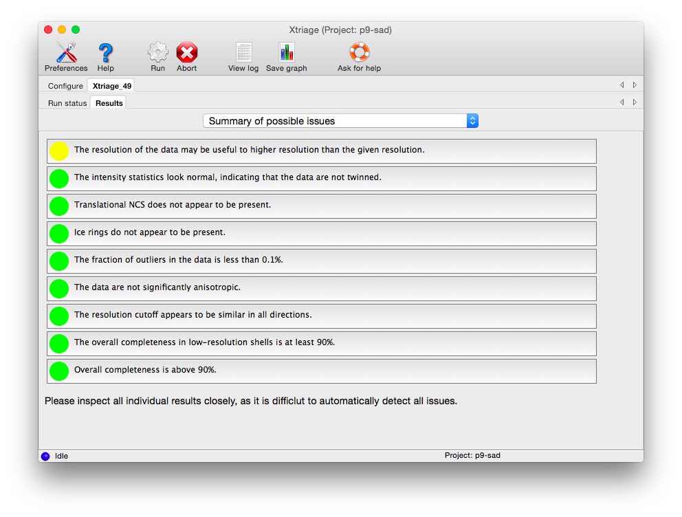
Each box can be clicked to jump to the detailed results in another tab. Analyses tagged with a red icon indicate issues that are likely to make various downstream steps such as phasing and refinement difficult (to varying degrees). Some of these may be remedied by better data processing, but they may be due to inherent issues of crystal quality. Yellow icons indicate issues that may produce sub-optimal results but are not necessarily fatal - for instance, if the resolution limit appears to have been chosen too conservatively. Green icons indicate that the data are of acceptable quality.
If you provide unmerged (but scaled) intensities as input, the program phenix.merging_statistics will be run internally and the results displayed in their own tab.
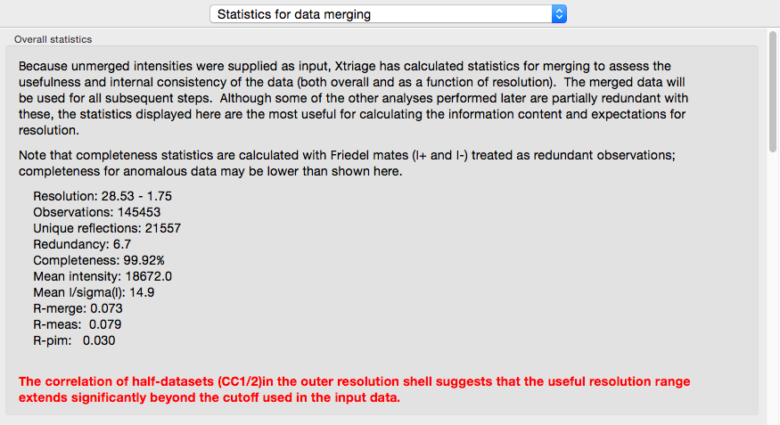
In addition to the overall analysis, tables and plots display statistics by resolution shell, first for general counting statistics and signal-to-noise, second for various measures of data quality (including R-merge and CC1/2).
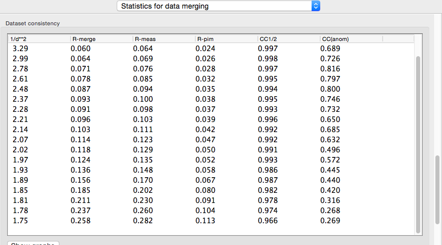
Clicking the plot button below a table opens plots for each set of analyses in a separate window.
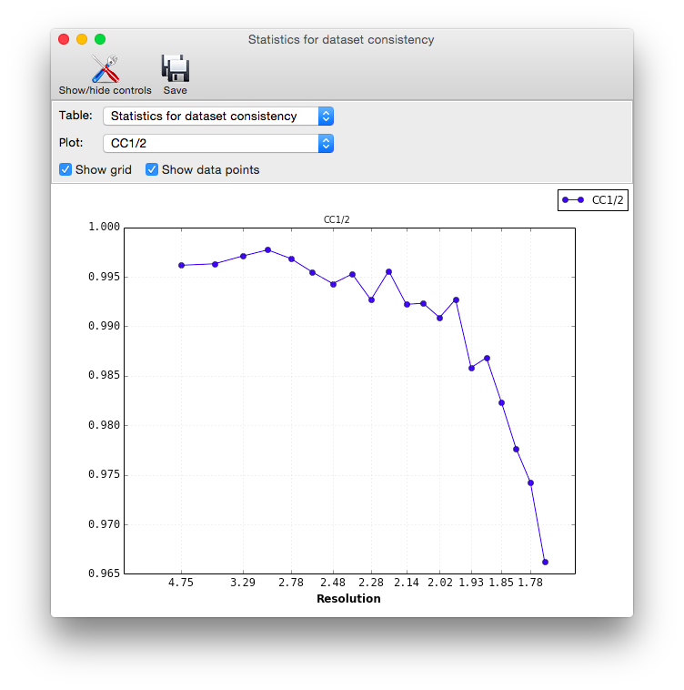
Data strength. Xtriage displays two graphs of signal-to-noise ratio, one overall plot by resolution range, and a second combining signal-to-noise and completeness (shown below). These are very similar to the output of data-processing programs such as HKL2000 and the CCP4 suite (MOSFLM/SCALA), and usually do not vary greatly unless the data are systematically incomplete and/or very weak.
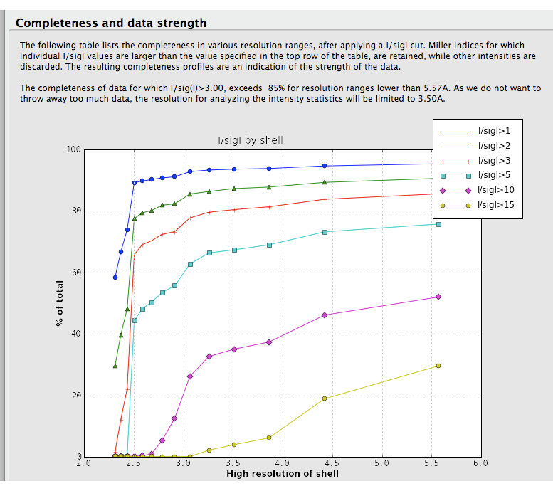
This analysis is also used in the automatic determination of the high resolution limit used in the intensity statistics and twin analyses. A separate table shows completeness for low-resolution data alone.
Most data processing software do not provide a clear picture of the completeness of the data at low resolution. For this reason, xtriage lists the completeness of the data up to 5 Angstrom:
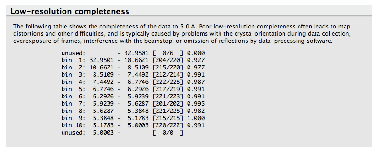
This analysis allows one to quickly see if there is any unusually low completeness at low resolution, for instance due to missing overloads.
A Wilson plot analysis a la ARP/wARP is carried out, albeit with a slightly different standard curve. This determines overall B-factors (isotropic and anisotropic) for the data. A large spread in the diagonal values indicates anisotropy, as shown below (however, this example, the p9-sad structure included in the examples directory of the Phenix distribution, is actually very good data). The shape of the curve does not vary greatly for most data, and a large deviation from expected values is unusual. However, the resolution at which the maximum of the curve is found will be different depending on the type of molecule crystallized (protein vs. nucleic acid).
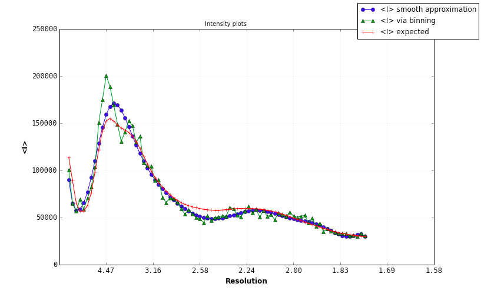
Problems with the Wilson plot will be identified and reported; again, the p9-sad example is relatively free of pathologies:
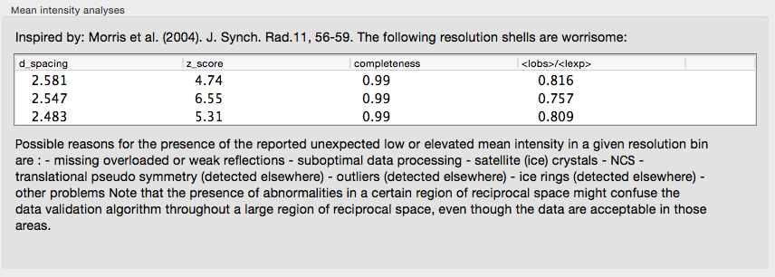
A very long list of warnings could indicate a serious problem with your data. Decisions on whether or not the data is useful, should be cut or should thrown away altogether, is not straightforward and falls beyond the scope of Xtriage.
Ice rings in the data are detected by analyzing the completeness and the mean intensity:
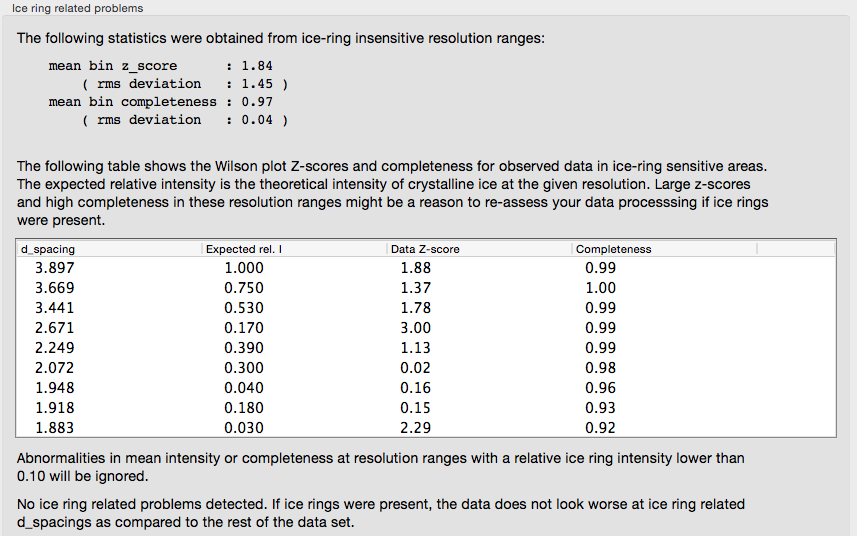
If the input reflection file contains separate intensities for each Friedel mate, an approximate measure of the anomalous signal is reported. The p9-sad example, a high-resolution SeMet SAD dataset, is shown again:
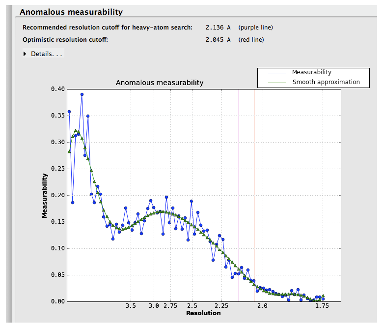
Suggested resolution cutoffs at which the anomalous signal disappears are shown by the vertical lines. Note that these are intended for heavy-atom substructure determination using for example HySS; they are not especially robust as a measure of quality. The p9-sad example is unusually excellent; a more difficult (but still solvable) dataset, the sec17 example in the Phenix distribution, is below:
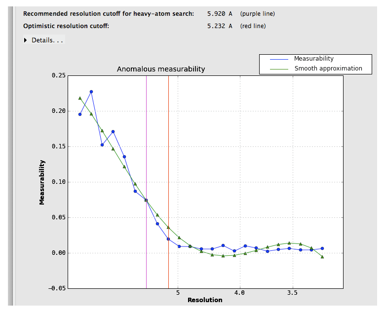
Measurability values above 0.05 are encouraging; if the data do not reach this threshold at a usable resolution, successful phasing by SAD/MAD is extremely unlikely.
A more useful indicator of anomalous signal quality is the CC(anom), which is calculated if unmerged data are provided. This is essentially similar to CC1/2: the unmerged observations are separated into two pools, each of which is then merged (keeping Friedel mates separate), and the correlation coefficient of their anomalous differences is calculated. Values above 0.3 are very encouraging.
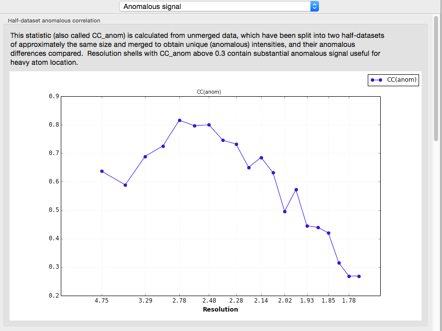
Xtriage will print a summary of its interpretation of twinning analyses at the top of the tab, including merohedral and pseudo-merohedral twin laws compatible with the lattice. Below is the output for the pseudo-merohedrally twinned porin-twin example data:
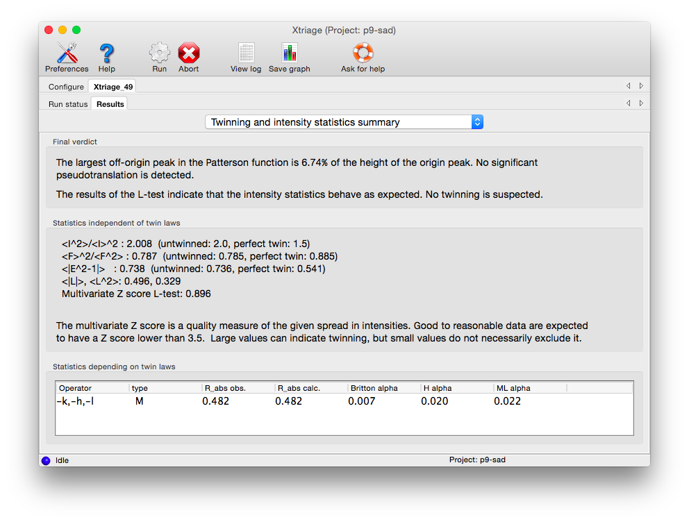
Two separate tests for twinning rely on the cumulative distribution of intensities. Both of these result in plots with a distinctive shapes for normal vs. twinned data. The first, the NZ test, is shown below for the untwinned p9-sad data:
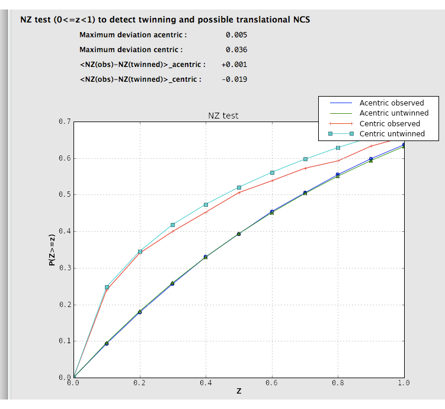
The plot for a twinned dataset has sigmoidal curve instead:
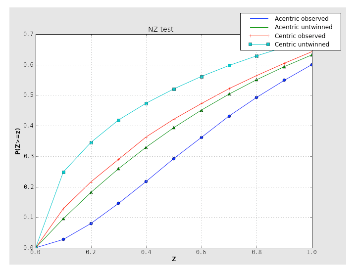
Translational NCS (and translational pseudosymmetry) will also result in an abnormal curve, shifted up relative to the expected distribution. Below is the NZ test plot for an untwinned dataset with translational pseudosymmetry:
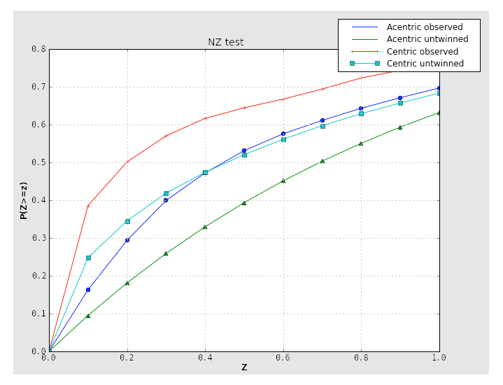
Because the combination of twinning and translational NCS may result in a curve that appears close to normal, it is important to consider the second test for twinning, the L-test. Here, twinning is indicated by an upwards shift of the curve relative to expected values:
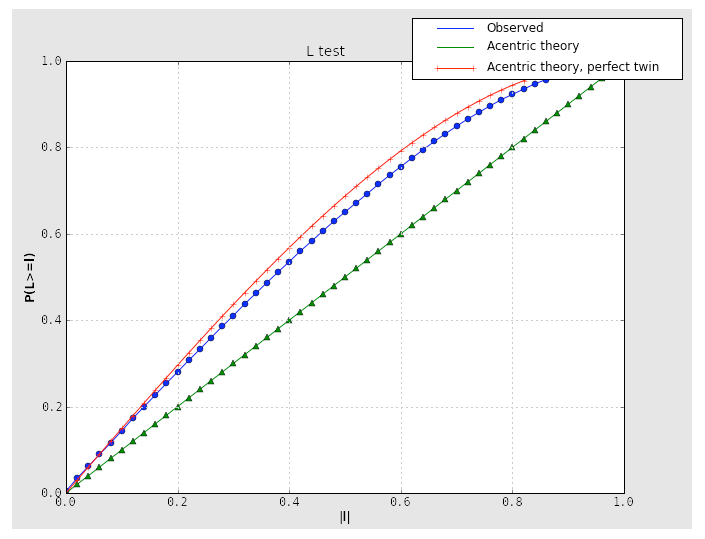
If the crystal symmetry is compatible with one or more twin laws, each of these will be analyzed separately to determine the expected twin fraction. Most of these will result in a very low twin fraction whether or not twinning is present, but the actual twin law, if any, will usually have a significantly higher value, reflected in the shape of the curves. Results from an untwinned crystal typically look like this:
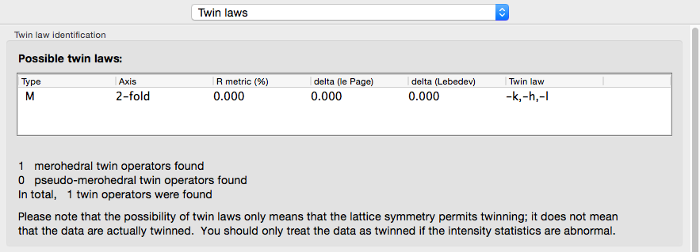
The actual twin law for the porin-twin example:
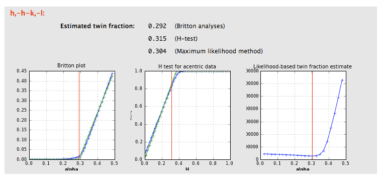